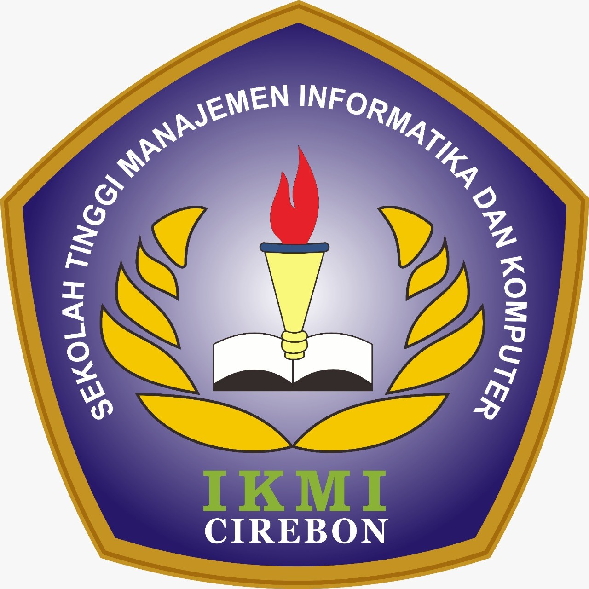

SEKOLAH TINGGI MANAJEMEN INFORMATIKA DAN KOMPUTER
STMIK
IKMI
CIREBON
Alamat Kampus
Jl. Perjuangan No.10B
Kec. Kesambi, Kota Cirebon
https://ikmi.ac.id/
Email :
info.ikmi.ac.id
SK. MENRISTEKDIKTI NO.1/KPT/I/2015
TERAKREDITASI BAN-PT
SURAT PERINTAH SEBELAS MARET(SUPERSEMAR)
No. XX/AKD/IKMI/VI/2022